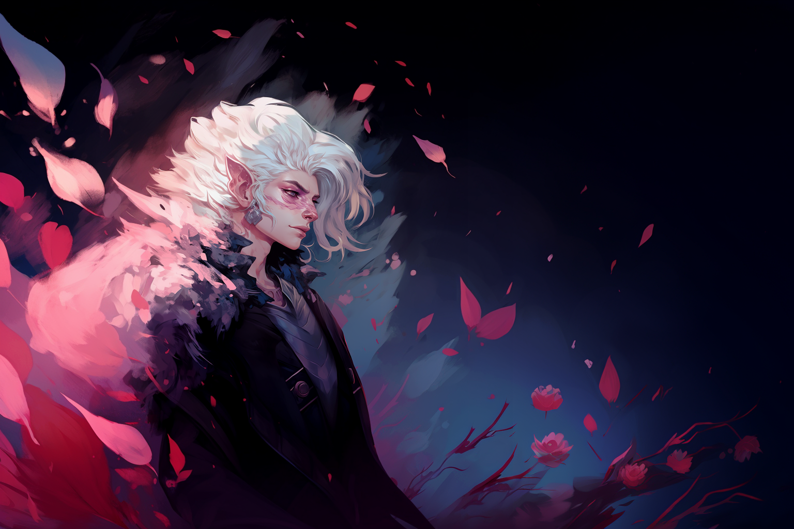

Zeph, el TejesangreEn Ciudad de Ébano, donde la oscuridad y la desesperación de los más desafortunados fluía por las venas de cada calle y callejón, había nacido un mestizo, mitad elfo, mitad humano. Con pálida piel, nívea melena y facciones apolíneas, el mestido llamado Zeph poseía una belleza inusual, y una penetrante mirada que terminaba por convertirle en un ser tan enigmático como peligroso. Desde temprana edad, Zeph sintió el llamado de la hemomancia, una antigua y cazada forma de magia que extraía el poder de la sangre misma. Su magia tomaba el aspecto de espinosas ramas oscuras que serpenteaban con un fulgor carmesí, pero lo más asombroso de su habilidad, era la manifestación de rosas que brotaban de la sangre que derramaba, creando siempre un hipnótico waltz entre un único y personal arte, y una macabra danza roja que dejaba allí en donde había conflicto. |
||||||||||||||||||

| Personalidad |
|---|
|

'Busco las respuestas que la luz nunca me revelaría' - Carlo, el Errante. Texto Mas texto |
| Historia |
|---|